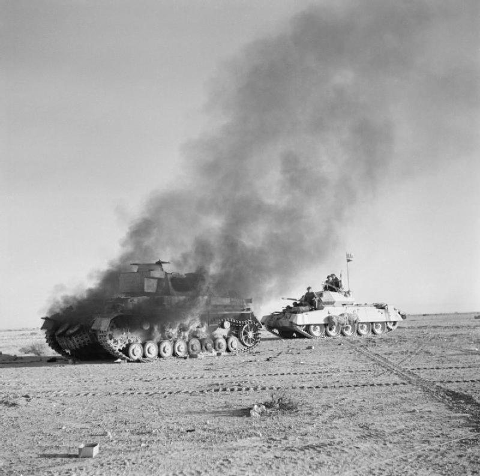

<!DOCTYPE html>
<html lang="pt-br">

<head>
    <meta charset="UTF-8">
    <meta name="viewport" content="width=device-width, initial-scale=1.0">
    <title>2° Guerra Mundial</title>
    <link href="Meu Estilo.css" rel="stylesheet">
</head>

</html>

<body>
    <center>
        <header>
            <h1 id="calabreso">Itália E Japão Na Primeira Fase</h1>
        </header>
    </center>
    <h1>Campanha Norte-Africana</h1>
    <p>Os conflitos começaram em 10 de junho de 1940, com uma declaração de guerra da Itália contra os Aliados, e
        consistiu em inúmeras campanhas por todo o norte da África, sendo essas as batalhas nos desertos da Líbia e do
        Egito (Campanha do Deserto Ocidental), Marrocos e Argélia (Operação Tocha), além da Tunísia (Campanha da
        Tunísia).</p>
        
    <p> O primeiro conflito foi entre o Exército Italiano e o 11° Hussars do Exército Britânico, que haviam cruzado as
        fronteiras da Líbia e capturou o Forte Capuzzo. Logo após, a Itália realizou uma ofensiva no Egito, que foi uma
        defendida com uma contraofensiva Britânica, chamada de Operação Compasso, o que resultou na destruição das
        forças italianas e a criação do Afrika Korps da Alemanha Nazista, eviados na Operação Sonnenblume, para apoiar
        as forças italianas.</p>
        
    <p> Nisso se iniciou uma série de conflitos pelo domínio do Egito e Líbia que tiverem seu fim na Segunda Batalha de
        El Alamein, que forçaram as forças do Eixo a recuar para a Tunísia, e após os desembarques Aliados no Norte da
        África, na Operação Tocha,e a vitória contra a França Vicht, os Aliados cercaram as forças do Eixo, forçando-nos
        a se render </p>
        
    <h1> Campanha Balcãs</h1>
    A Campanha dos Balcãs da Segunda Guerra Mundial começou com a invasão italiana da Grécia em 28 de outubro de 1940.
    Nos primeiros meses de 1941, a ofensiva italiana parou recuando para a Albânia. A Alemanha procurou ajudar a Itália
    enviando tropas para a Roménia e Bulgária e atacando a Grécia a partir do leste, enquanto as tropas britânicas
    desembarcavam e aviões fortaleciam as defesas gregas. O golpe de estado na Iugoslávia em 1941 em 27 de março, fez
    com que Hitler enviasse suas tropas ao país. A invasão da Iugoslávia pela Alemanha e Itália começou em 6 de abril,
    simultaneamente com a nova Batalha da Grécia.
    <p>Em 11 de abril a Hungria se juntou à invasão. Em 17 de abril os iugoslavos assinaram um armistício e em 30 de abril toda a Grécia continental estava sob controle alemão ou italiano. Em 20 de maio a Alemanha invadiu Creta e em 1 de junho todo o restante das forças gregas e britânicas que permaneciam na ilha se renderam. Embora não tenha participado dos ataques de abril, a Bulgária ocupou partes da Iugoslávia e da Grécia logo após e durante o resto da guerra nos Balcãs.</p>
    
    <h1>Japão No Extremo Oriente</h1>
    <p>Antes do início oficial da Segunda Guerra Mundial, o Japão já estava envolvido em uma guerra de agressão contra a China, com registros datados desde 1931, conhecida como a Segunda Guerra Sino-Japonesa (1937-1945). A invasão da China pelo Japão foi brutal, incluindo o Massacre de Nanquim em 1937, onde centenas de milhares de civis chineses foram mortos de maneira brutal. O Japão buscava expandir seu império e assegurar recursos naturais. </p>
    <p>Em 1940 e 1941, o Japão começou a se expandir para o Sudeste Asiático, ocupando a Indochina Francesa. A intenção era cortar o abastecimento de materiais essenciais para a China e preparar o caminho para futuras conquistas de territórios ricos em recursos, como as Índias Orientais Holandesas.</p>
    
</body>/